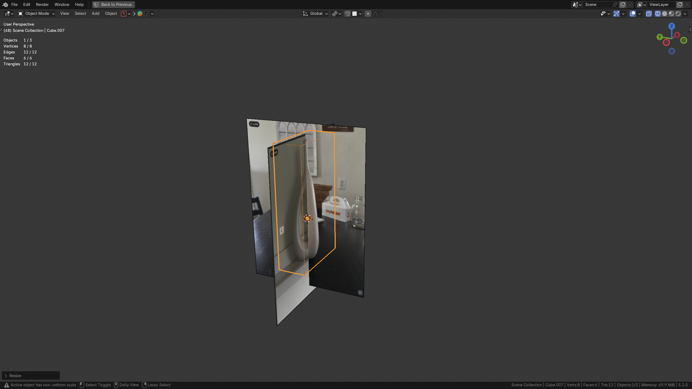
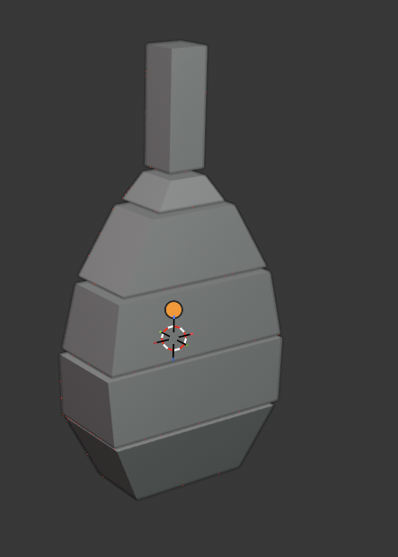

I like to start with a single cube and alter its dimensions so that all of my uploaded references are aligned, and I can get a sense of the model's volume (figure 3). Notably, this cube is not meant to represent the model's actual shape.

Generally a second blockout is needed to get a sense of scale and proportion for the model if the object it is based on is complex or composed of smaller parts. The object I have chosen is neither of those things, but if it were I have provided an example of how I would perform a second blockout (figure 4) if one were needed.

This concludes the blockout stage and now we are ready for the real 3D modeling process to begin in the next step: